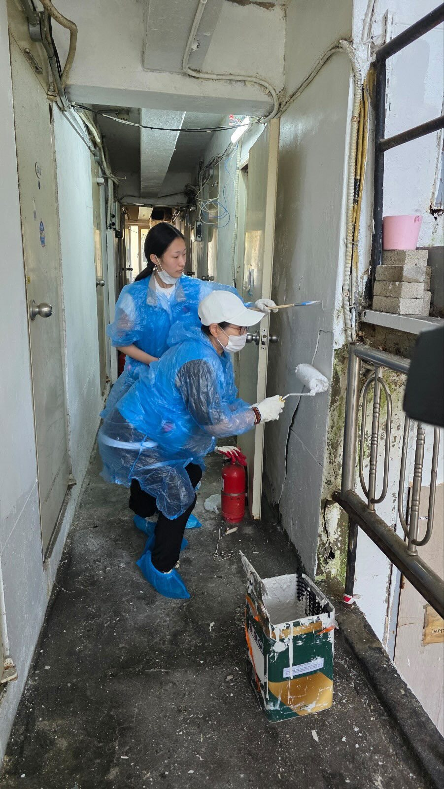
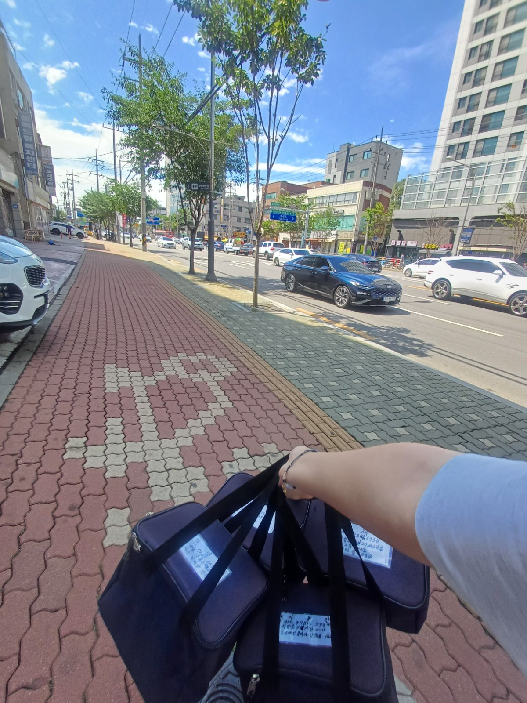
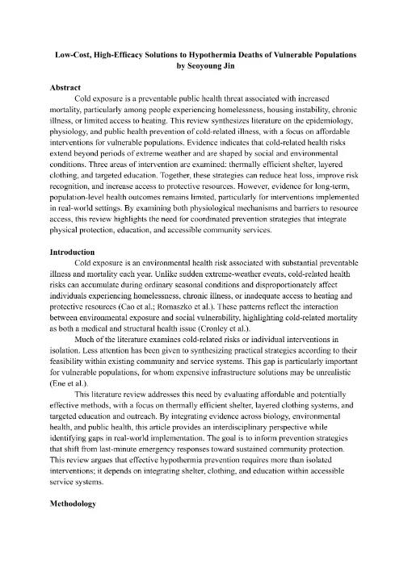
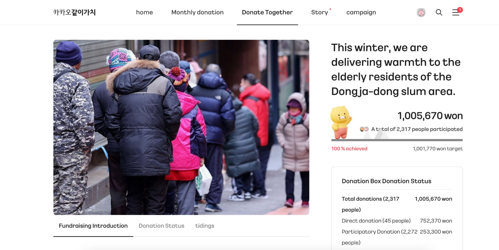
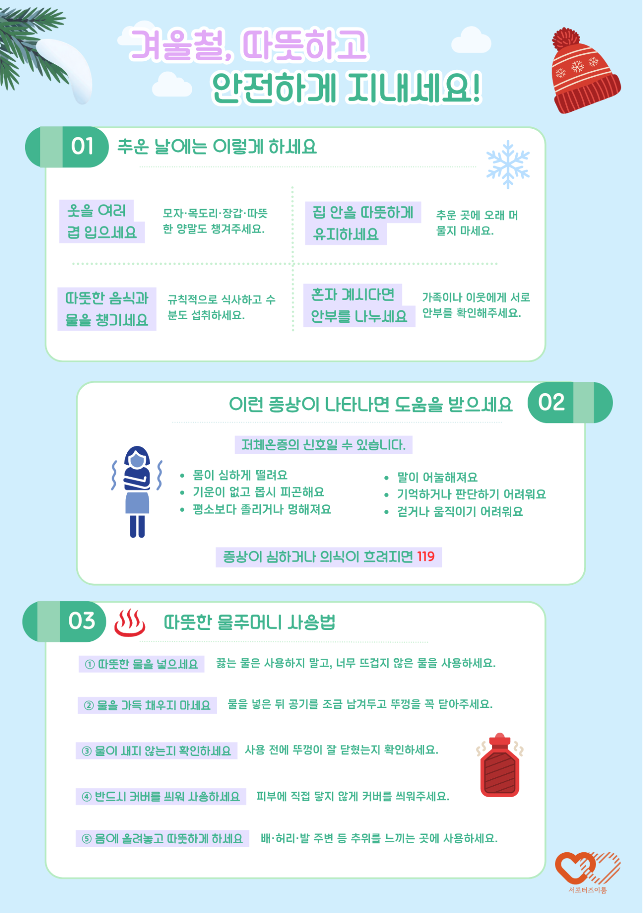
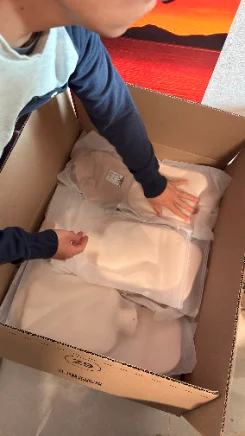

Hypothermia Research & Prevention Campaign
01
Firsthand experience
Volunteering in jjokbang-chon (single-room slums)
Housing restoration and lunchbox deliveries with NGO Supporters Eroom.


02
Making the connection
Research meets reality
My hypothermia research gave me a way to understand the cold-weather risks behind the living conditions I'd seen.

03
Turning an idea into a project
Reaching out to NGO Supporters Eroom
I contacted its president, Chul Choi, and worked through Kakao Together's complex application process to launch a fundraiser.

04
Putting it into practice
Community-funded winter relief
$800
raised through crowdfunding
2.3K
crowdfunding donors
170
Households reached
Visited households one by one with NGO members, demonstrating hot water bottle use and sharing practical cold-weather safety guidance alongside research-based posters.

